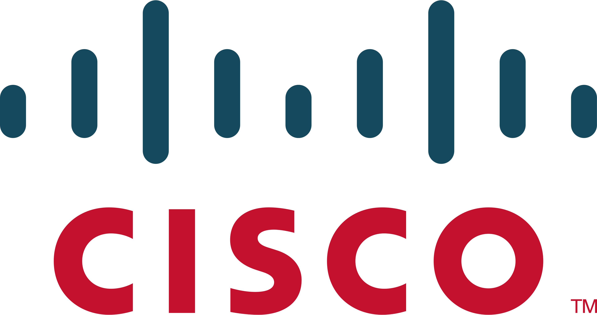

Cisco Networking Academy - Programming Essentials in Python
Dominio de las bases de la programación orientada a objetos en Python, incluyendo el manejo de estructuras de datos, control de flujo, funciones y la resolución de problemas mediante scripts para la automatización de tareas.
Julio 2026